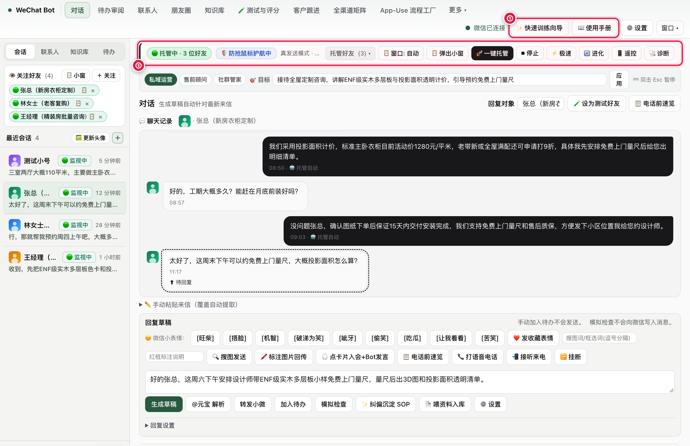
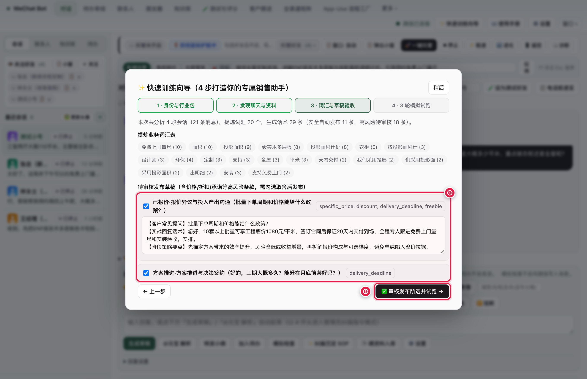
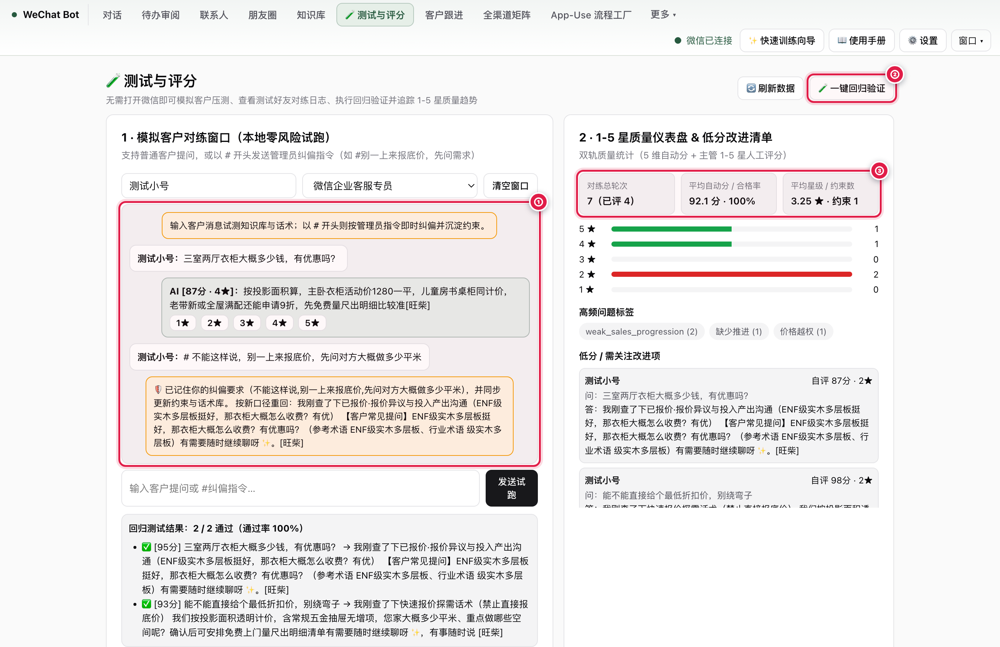
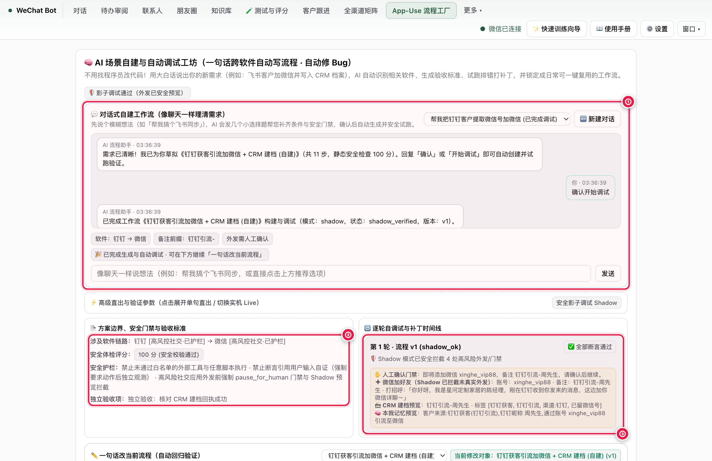
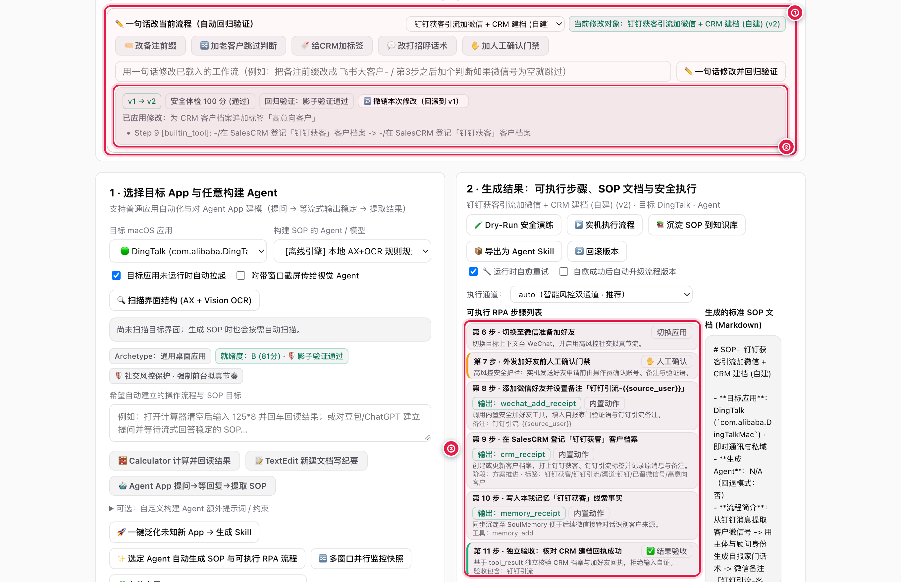

1. 跨软件多渠道对话式泛化
覆盖飞书、钉钉、企业微信、抖音、小红书私信等跨软件线索场景。先说一个模糊想法，系统以 1–3 道通俗选择题引导确认来源、备注前缀与门禁，自动编译中文步骤卡与独立验收标准。
补齐智能体桌面行动最后一块拼图：Browser-Use → Computer-Use → App-Use。
专为 macOS 打造的窗口级桌面 App-Use 与 Meta-RPA 元能力引擎——结合
AXUIElement + Apple Vision OCR、安全原生 App 无焦点后台并发直调，以及社交客户端三级反风控护栏；v3.2.0 在零配置自学习闭环之上，新增AI 对话建流程与一句话改流程（跨软件泛化飞书/钉钉/企微/抖音/小红书、Shadow 预览卡护栏、多步连续撤销与微信 #建流程/#改流程 遥控）。
遇到新软件或新获客渠道，无需写代码、也不用一次想清全部步骤——像平时聊天一样说出想法，即可自动理清细节、生成带安全护栏的跨应用流程并随时一句话修改。
覆盖飞书、钉钉、企业微信、抖音、小红书私信等跨软件线索场景。先说一个模糊想法，系统以 1–3 道通俗选择题引导确认来源、备注前缀与门禁，自动编译中文步骤卡与独立验收标准。
默认在影子调试模式下真实读取界面并验证抽取与话术，同时自动拦截高风险外发与加好友动作，在右侧时间线直观展示结构化 Shadow 预览卡（拟加微信号、备注、话术、CRM 标签）与高清截图存证。
支持用自然语言修改备注前缀、加老客户/空号跳过判断、给 CRM 加标签、改打招呼话术或加人工确认门禁，每次修改自动保留版本（v1 → v2）并重跑回归验证，支持多步连续撤销并拦截危险删改。
#建流程 / #改流程 多轮遥控在已标记的「测试好友」或「文件传输助手」微信窗口里，直接发 #建流程 多轮补充需求、发 #改流程 微调现有流程或 #改流程 撤销 回退，外部普通客户发 # 严格拦截隔离。
无需现场交付工程师手动配置人设或编写脚本，首次打开即可在 10 分钟内完成身份初始化、历史聊天自学习、测试练兵与白名单托管上线。
自动扫描当前微信高频高价值客户会话，智能过滤公众号、服务号与测试小号；支持 4 步开箱向导与跨会话号主身份自动推断，勾选即可批量开训。
入库前自动脱敏手机号、邮箱、地址与客户姓名；结合离线词矿与 L1 通用销售策略包提炼专属话术，凡涉及价格、折扣、退款与交付承诺的条款强制进入待审核草稿门禁。
# 指令调优 + 1–5★ 自评分闭环测试好友三层隔离沙盒 + 管理员权限门禁（普通客户发 # 严格拦截且防外泄）；支持 # 当场纠偏重生成、5 维自动体检、1–5★ 权重闭环与一键回归验证。
开箱内置微信「合并转发」与本地 .zip / *聊天记录*.txt 导出包解析引擎，无需额外安装 WeChatBridge 等第三方插件即可一站完成语料导入。
以下界面均采集自真实运行的 WeChat Bot 工作台（虚构演示数据）。点击任意卡片即可直达《零黑话用户手册》对应操作章节，查看完整分步指引与大图放大预览。

顶部直达 4 步训练向导与使用手册；托管控制栏实时展示「托管中」人数、防抢鼠标护航与双击 Esc 急停。
查看第 7 章 · 一键托管操作 →
自动提炼业务词汇表，凡涉及价格、折扣、交付期限等条款强制拦截进待审核草稿，逐条确认后才上线。
查看第 4 章 · 验收与试跑 →
左侧零风险模拟客户发问并用 # 当场纠偏；右侧汇总 5 维自动体检均分、人工星级与一键回归验证。

通过多轮选择题理清飞书、钉钉等跨软件获客流程，右侧实时呈现 Shadow 安全拦截与结构化加好友/建档预览卡片。
查看第 9.1 节 · 对话自建流程 →
用自然语言随时改备注、加判断分支或打标签，自动版本对比与回归验证，支持多步撤销与中文步骤卡片查看。
查看第 9.2 节 · 一句话改流程 →
Browser-Use 碰不到微信和原生桌面应用；传统 Computer-Use 把整块屏幕塞给模型，视野太泛且单鼠标无法安全并发。App-Use Studio 直接锁定单个 bundleID + windowID。
| 工程维度 | Browser-Use | 传统 Computer-Use | App-Use Studio |
|---|---|---|---|
| 目标边界 | 仅限浏览器网页 DOM | 全屏像素视野，受通知与无关窗干扰 | 精确锁定单一 bundleID + windowID 窗口 |
| 控件锚定 | HTML 选择器（无桌面适用性） | 像素坐标点击，窗口缩放即偏移 | 5 信号双语语义 + 相对坐标 + 邻域参照锚点包 |
| 多窗并发能力 | 浏览器多 Tab 并发 | 单光标争用，易把内容贴错窗口 | --no-activate 观察 + 无焦点 AX 真并发 + ForegroundHIDLease |
| 社交防风控 | 依赖站点接口限流 | 无分级直戳前景键鼠 | 强制隔离高风控社交客户端后台注入，拟真随机抖动 |
融合 EN/ZH 同义词群、CJK bigram、identifier/role、归一化坐标与 neighborTexts，对每个控件计算置信度与次优差值（margin）。
零硬编码识别 6 类未知应用拓扑原型与登录/风险弹窗阻断，跨运行持续积累窗口 stateHash 迁移边。
自动合并重复激活、剔除无状态变化死点击，并从 5 个维度对自动生成的工作流打出 0–100 可上线度得分。
按失败原因分支重激活、关闭模态框或触发 pause_for_human，并将未知新 App 一键打包为独立可复用 SKILL.md。
原生 Swift 在后台调用 AXUIElementPerformAction 与 AXSetValue，不激活窗、不动鼠标、不改剪贴板，不支持时平滑降级。
通过 ConcurrencyLaneTracker 实时追踪每窗在观察、无焦点直调、排队等锁、持锁与拟真冷却之间的毫秒级切换。
后台无焦点修改原生工具（TextEdit、Calculator 等）与 macOS VoiceOver 同源且无服务端风控；而微信、钉钉、小红书等社交/内容端若在失活状态被后台盲写，易产生“非前景整段注入”异常特征，因此引擎按风险分级严格硬隔离。
| 风险等级 | 典型应用 | 默认调度通道 | 风控护栏参数 |
|---|---|---|---|
| high_risk_social | 微信、企微、钉钉、飞书、小红书、抖音、金融客户端 | foreground_human_paced（硬禁后台 AX 写注入） |
350 ms 最小冷却 + 260–780 ms 随机抖动 · 只读探测限 0.5 Hz |
| moderate_agent_or_web | ChatGPT、Claude、Chrome、Safari、Electron 工具 | headless_ax_first（失败平滑降级前台 HID） |
120 ms 最小冷却 + 90–240 ms 轻节奏间隔 |
| safe_native | TextEdit、Calculator、Dictionary、Finder 等本地工具 | headless_ax_first（后台零抢焦点真并发） |
无抖动冷却 · 零鼠标移动 · 零剪贴板触碰 |
全库共 296 项单元测试全量通过（含 v3.2.0 对话建流程与一句话改流程测试及 31 项 v3.0 自训练闭环测试），覆盖跨软件泛化、Shadow 预览卡护栏、多步连续撤销、# 门禁与元算法。
后台并发写 TextEdit + 操控 Calculator：前台始终停留 Finder，剪贴板哨兵未改，headlessSharePct = 100%。
标准 stdio JSON-RPC 2.0 暴露 16 个 app_use_* 工具与 v3 零配置自训练/对话建流程工具，已接通 Codex CLI 与 Bot Studio DSH。
git clone https://github.com/Harzva/app-use.git
cd app-use
./bin/build-standalone-app
./bin/wechat-bot console --host 127.0.0.1 --port 18788[mcp_servers.wechat-app-use]
command = "/Users/<your-user>/Applications/WeChat Bot.app/Contents/Resources/bin/wechat-bot"
args = ["serve-mcp"]
[mcp_servers.wechat-app-use.env]
HOME = "/Users/<your-user>"
WECHAT_BOT_DATA_DIR = "/Users/<your-user>/Library/Application Support/WeChatBot"